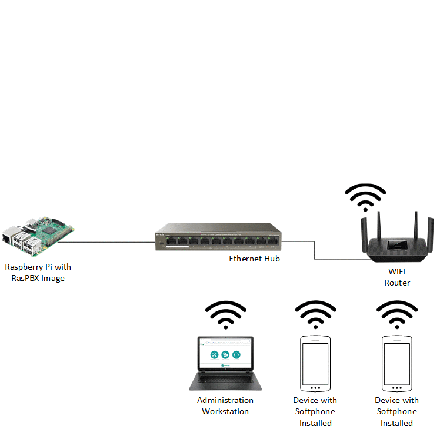

The inspiration for this project came from the article " Build a telephone exchange " in MagPi issue 78. I ran into issues with this build and did not listen to the advice of others to throw out the phones and gets some newer ones which are supported and can be easily configured.
My advice is if you have Cisco 7941G phones, it is possible to get them to work and it is not too bad once you understand how to configure them and get them to work. If you do not have these phones, then I would advise you to move along and get a newer phone because the Cisco 7941G phones are not for the faint of heart. They are difficult but not impossible to setup. Hopefully the information that I have collected and am sharing here will help you to configure your RasPBX/FreePBX installation to work with the Cisco 7941G IP phones.
The articles here are setup to let you pick and choose which ones you would like to follow based on your needs. I am not an expert in this area, but
I had enough knowledge and ability to Google for answers to figure this out. I invite others with more knowledge in these areas to make improvements
by forking this repository, making changes, and creating a pull request. If you run into any issues or see errors, please feel free to submit an
issue and I will attempt to address it.

Animated image showing the PBX Network buildup over the course of these articles.